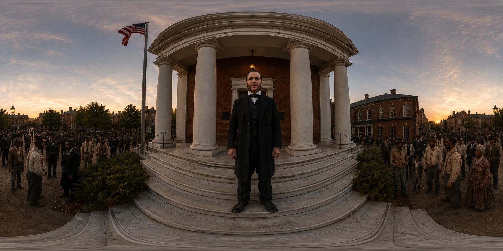

Valley of the Shadow
History you can stand inside.
+4episodes requested after the first
[#][students or visitors reached]

- Client
- New American History, with Shenandoah University [confirm]
- Company
- Ruscella Immersive [confirm year]
- Role
- Chief Creative Officer and Co-Founder
- Team
- [Team size]
- Discipline
- Immersive production, 360 storytelling
Challenge
New American History wanted students to witness Reconstruction-era history, not just read about it. [confirm]
Solution
- Episode one of a four-episode immersive documentary series, built on OrchestrateXR.
- Puts visitors in the crowd outside a Virginia courthouse, and inside the room where freedom was argued, in 360°.
- Characters, environments and narration created with multiple AI platforms, with interactions built for the classroom.
My role
- Designed the experience
- Developed characters, animations, environments and voice-over narration using multiple AI platforms
- Developed the entire experience, including interactions, as sole developer working directly with the client
Highlights


Results
- One experience led New American History to request four more.
- [Add other results]